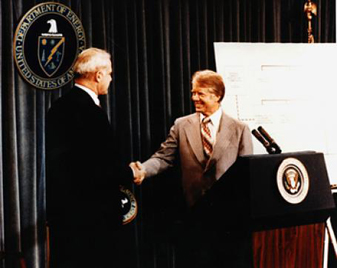

1977
President Carter signs the Department of Energy Organization Act. The Federal Energy Administration and Energy Research and Development Administration are abolished. James R. Schlesinger is sworn in as first Secretary of Energy. The DOE brings together a score of organizational entities from a dozen departments and agencies; the new department is also given responsibility for the nuclear weapons program.
